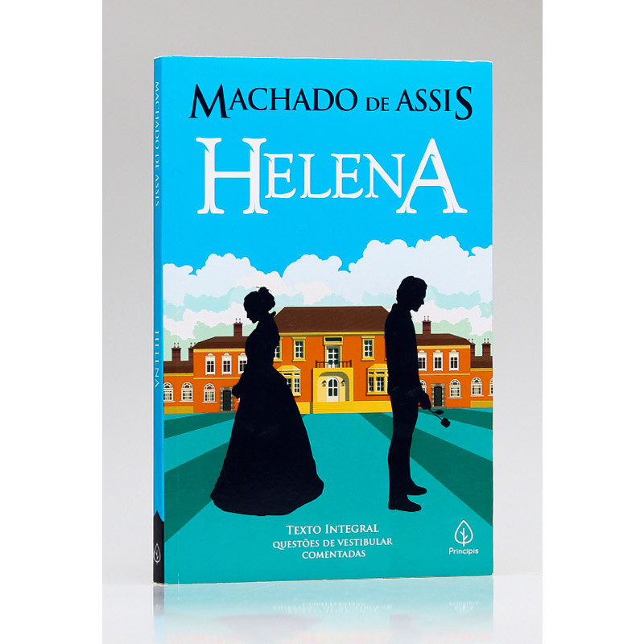
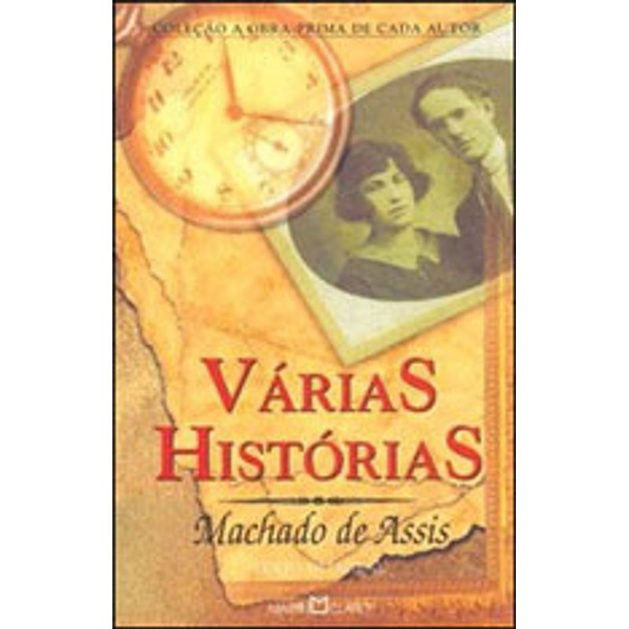
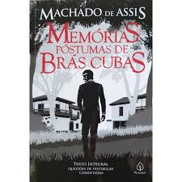

Machado de Assis
Bem-vindo ao nosso site dedicado a Machado de Assis, um dos maiores escritores da literatura brasileira. Considerado um dos fundadores do realismo no Brasil, suas obras exploram a complexidade da condição humana com um estilo único e inovador. Entre seus trabalhos mais reconhecidos estão "Dom Casmurro", "Memórias Póstumas de Brás Cubas" e "Quincas Borba". Essas narrativas são aclamadas por suas técnicas literárias sofisticadas, incluindo a utilização de narradores não confiáveis e uma profunda análise psicológica de seus personagens.
Além de romances, Machado de Assis foi um prolífico contista, cronista, poeta e dramaturgo, contribuindo de forma significativa para a cultura literária do país. Sua produção literária abrange diversos temas, como a crítica social, a ironia e o pessimismo, sempre com uma escrita elegante e reflexiva. Ao explorar as páginas deste site, você poderá mergulhar no universo de Machado de Assis, conhecer suas obras mais marcantes e entender a relevância de seu legado para a literatura mundial.
Vida
Joaquim Maria Machado de Assis nasceu no Rio de Janeiro, em 21 de junho de 1839. Filho de uma lavadeira e de um pintor de paredes, teve uma infância humilde, marcada por dificuldades financeiras. Apesar de não ter frequentado a universidade, Machado de Assis foi um autodidata brilhante, adquirindo vasta cultura literária e conhecimento de várias línguas. Seu talento o levou a uma carreira de sucesso na imprensa e na administração pública, além de se tornar um dos fundadores da Academia Brasileira de Letras, onde ocupou a cadeira número 23.
A vida pessoal de Machado de Assis foi marcada por desafios, incluindo problemas de saúde e a perda prematura de sua esposa, Carolina. No entanto, esses obstáculos não impediram que ele se tornasse uma figura central na literatura brasileira. Machado de Assis faleceu em 29 de setembro de 1908, deixando um legado imortal que continua a ser estudado e admirado por gerações de leitores e estudiosos ao redor do mundo. Seu trabalho reflete uma profunda compreensão da sociedade e da alma humana, garantindo-lhe um lugar de destaque entre os grandes nomes da literatura mundial.
Principais Obras




- Dom Casmurro (1899)
- Memórias Póstumas de Brás Cubas (1881)
- Quincas Borba (1891)
- Esaú e Jacó (1904)
- Várias Histórias (1896)
- Helena (1876)
- Iaiá Garcia (1878)
- Ressurreição (1872)
- O Alienista (1882)
- Papéis Avulsos (1882)
Obras para baixar
Clique para baixar
Mais informações
Para mais infromações sobre a vida e obra de Machado de Assis, acesse o site https://machado.mec.gov.br/. Lá pode-se baixar suas obras gratuitamente e conhecer mais sobre a vida desse ilustre autor.